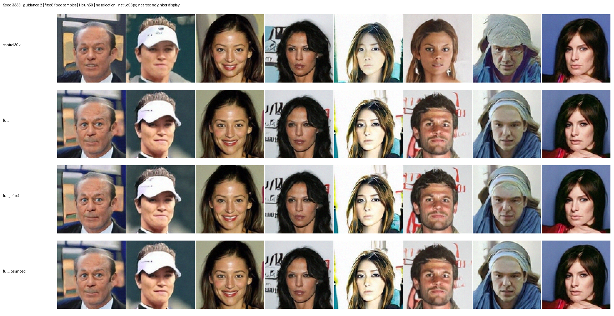
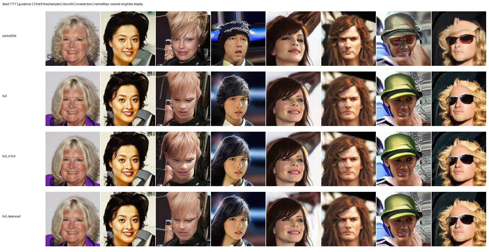
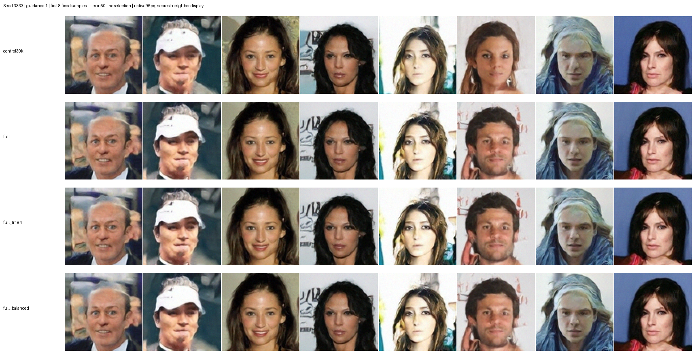

四组训练及 28 次评估均成功完成，每组本轮新增 16.384M 曝光，从共同 EMA 初始化阶段起累计 32.768M 曝光。验证集仍为原来的 1000 张。3 万张对照与全量标准组各续接自身完整状态；两个变体从上一轮全量标准组完整状态出发，各只改一个参数。本轮没有重置优化器、EMA 或随机状态。
学习率 1e-4 的全量组最好：guidance=2 的平均 FID 51.125，优于全量标准 51.604 与 3 万张对照 53.347；两个 seed 都胜出，平均 KID 和无引导 FID 也更好。上一轮全量最佳平均 FID 为 52.666。本轮标准组继续改善；高噪声比例组在中途 24.576M 的平均 FID 51.559 好于最终的 51.708，未显示继续延长就会改善。
| 配置 | 20.48M 平均 FID | 24.576M 平均 FID | 32.768M 平均 FID | 最终无引导 FID | 最终平均 KID |
|---|---|---|---|---|---|
| 3 万张对照 | 53.4742 | 53.4604 | 53.3469 | 68.7469 | 0.0347 |
| 全量标准 LR 5e-5 | 52.7772 | 51.8989 | 51.6039 | 63.7002 | 0.0330 |
| 全量 LR 1e-4 | 52.3871 | 51.4464 | 51.1252 | 61.8183 | 0.0324 |
| 全量高噪声比例略增 | 51.8461 | 51.5591 | 51.7079 | 62.6381 | 0.0329 |
| 配置 | seed3333 FID | seed7777 FID |
|---|---|---|
| 3 万张对照 | 53.3964 | 53.2973 |
| 全量标准 LR 5e-5 | 51.4097 | 51.7980 |
| 全量 LR 1e-4 | 50.8944 | 51.3560 |
| 全量高噪声比例略增 | 51.3209 | 52.0949 |
FID/KID 越低越好。每个评估生成 1024 张图，对照固定 1000 张验证图；guidance=2、Heun50、相同早期 guide。两个 seed 是采样复核，不是独立重复训练；结果用于筛选，不能据此宣称统计显著性。
以下每行固定前 8 张，没有筛选或增强。行顺序：3 万张对照、全量标准、全量 LR 1e-4、全量高噪声比例略增。显示为原始 96px 图的最近邻放大。


